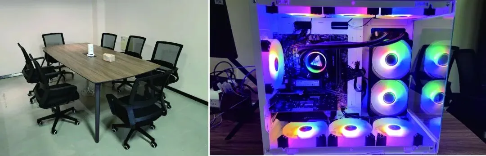
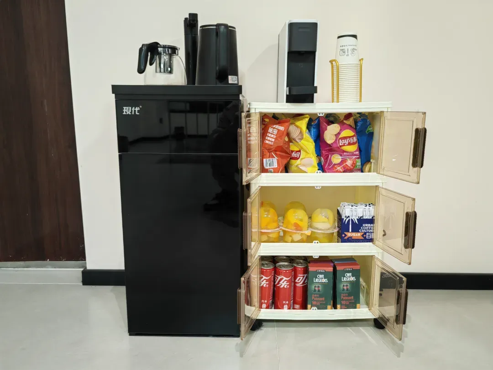

Biomamba生信基地诚招运营
原文：https://mp.weixin.qq.com/s?__biz=MzAwMzIzOTk5OQ==&mid=2247524049&idx=1&sn=e4eee7694c4a2b797c299871ce3ca1b4&chksm=9b3ce781ac4b6e97d4f020347e9266e726af7d298e87a87cefa85c8693bcbf6a4acd121cf2ce#rd 合集：生信基地 / 求职/求学/招聘

写在前面


Biomamba生信基地已经稳定运行多年，线下生信基地因发展需要，现诚聘全职 的小伙伴。先聊聊我和平台的优势(我自认为的)。
1、本人95后，目前的工作内容都直接与我直接对接，相信作为同龄人的我们沟通起来会零障碍 。愿意选择加入我们的同学都会被我们会当作伙伴。Biomamba负责给你们打杂，你们只需要安心工作

Biomamba组装椅子ing
2、Biomamba明年博士毕业，并且希望长期从事科研工作 ，相信无论是在职场 还是学术 层面都能够为你提供一定的帮助。
3、资金充裕：一定为大家提供一份与你个人能力和工作内容相匹配 的薪酬。
4、工作环境稳定：Biomamba生信基地励志为大家提供至少五十年的科研内容输出，所以办公室是我全资购置的(位于南京百家湖CBD ，隔壁就是景枫、金鹰、1912、太阳城、百家湖，心情不好随时下楼逛街)，大平层，朝南 的飘窗，光照充足，保障大家的工作环境和心情一样阳光。还有38年产权，完全不用担心 公司/老板跑路。现在公司人均工作机都是海景房 ，人均工作面积可观，目前90平的工作环境里只安排了两位同事。

给大家配备了茶水吧、咖啡机、零食柜，还有想要的配套设施也欢迎告诉我们：

5、没有出差压力，在办公室里就可以完成全部的工作内容。
6、业务稳定：我们全网有近十万 的粉丝用户，拥有多家战略合作 伙伴。目前Biomamba生信基地处于快速扩张阶段，早期加入的员工能够快速晋升，熟悉工作内容后即可成立独立部门纳新。

岗位要求
1、岗位定位：Biomamba公众号运营
2、职责：负责管理客服账号 ，完成与粉丝/合作伙伴的日常对接工作 ，并反馈数据、分析公众号发展现状。组织公众号/生信基地线下线上活动组织筹划（例如：生信基地第一课| 1.5天学会单细胞分析)，公众号文献解读/代码分享类内容计划与输出。3、要求：熟悉本公众号内容。学历要求本科 及以上，有内驱力与自我学习能力。我希望你能够拥有生物信息学背景 ，了解(不是掌握)常见的生物信息学分析，能够熟练的应用各类办公软件(office三件套Word、Excel、PPT；adobe三件套PS、AI、PR)。能够有效的完成与粉丝、合作伙伴、以及我本人的日常沟通。希望近期能够线下入职 。
联系方式
有意向的同学可以发送您的简历、意向职位、最早实习/入职时间、预期薪酬、联系方式发送至邮箱1913507043@qq.com 。